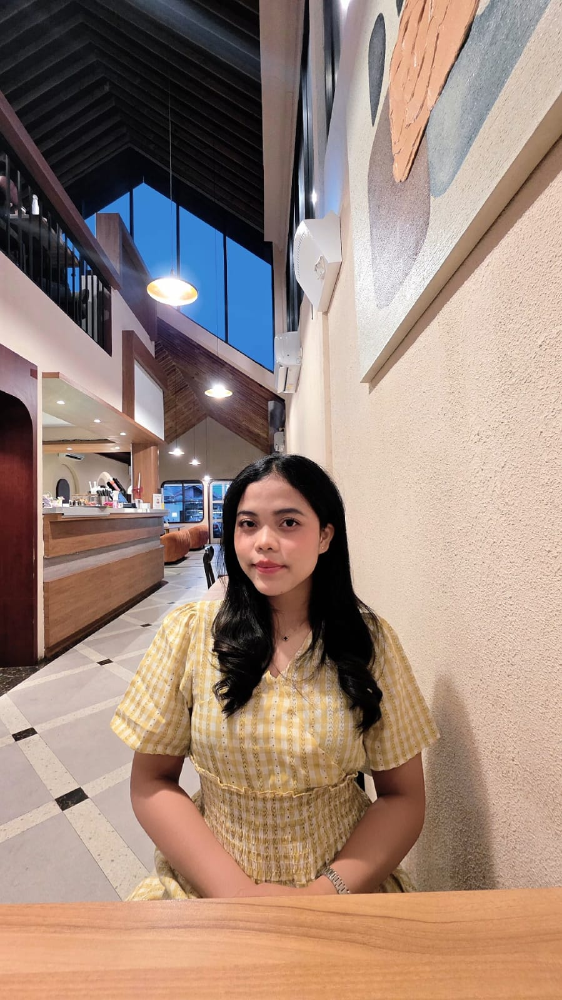

Informatics Engineering Student | Passionate About Learning & Growing
Setiap langkah adalah bagian dari proses belajar, setiap pengalaman menjadi kesempatan untuk tumbuh dan berkembang.
GET TO KNOW ME ↓Halo! Saya Yunita Siregar, mahasiswa semester 5 Program Studi Teknik Informatika di Universitas Indraprasta PGRI.
Saya percaya bahwa setiap proses memiliki nilai dan setiap pengalaman memberikan kesempatan untuk berkembang. Melalui perkuliahan, saya terus memperluas pengetahuan, mengasah kemampuan, serta belajar menghadapi berbagai tantangan.
Bagi saya, kemauan untuk belajar, kedisiplinan, dan tanggung jawab merupakan bagian penting dalam membangun diri. Saya ingin terus berkembang, memperoleh pengalaman baru, dan mempersiapkan diri untuk masa depan.
Yunita Siregar
Mahasiswa Semester 5
Teknik Informatika
Universitas Indraprasta PGRI
Jakarta, Indonesia
Mempelajari dasar pembuatan dan pengembangan website menggunakan HTML dan CSS.
Mengembangkan pemahaman tentang logika pemrograman dan penyelesaian masalah melalui latihan.
Mempelajari dasar pengelolaan basis data dan penggunaan SQL untuk mengolah data.
Berusaha mengatur waktu dan menyelesaikan tanggung jawab dengan terencana.
Belajar bekerja sama, bertukar pendapat, dan berkontribusi dalam kegiatan kelompok.
Membiasakan diri untuk disiplin dan bertanggung jawab dalam menjalankan kegiatan.
Menempuh pendidikan S1 Teknik Informatika dan mempelajari dasar pemrograman, pengembangan website, serta basis data.
Menyelesaikan pendidikan menengah atas dan mengikuti kegiatan ekstrakurikuler yang memberikan pengalaman dalam kerja sama dan tanggung jawab.
Berpartisipasi dalam kegiatan kepemudaan dan sosial di lingkungan masyarakat serta membantu pelaksanaan kegiatan bersama.
Berpartisipasi dalam kegiatan pelayanan dan perayaan Natal serta memperoleh pengalaman dalam kerja sama, komunikasi, dan tanggung jawab.
Website portofolio pribadi menggunakan HTML dan CSS untuk memperkenalkan diri, keterampilan, serta pengalaman.
Latihan dan tugas pemrograman selama perkuliahan untuk mengembangkan logika dan kemampuan menyelesaikan masalah.
Latihan pengelolaan data dan penggunaan SQL sebagai bagian dari pembelajaran basis data.
Terima kasih telah mengunjungi portofolio saya. Saya terbuka untuk berbagi pengalaman, bertukar ide, dan mempelajari hal-hal baru.